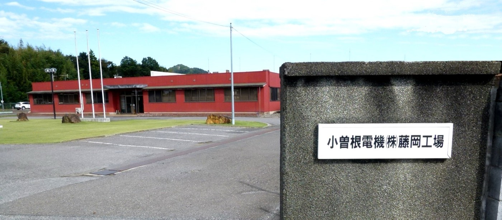
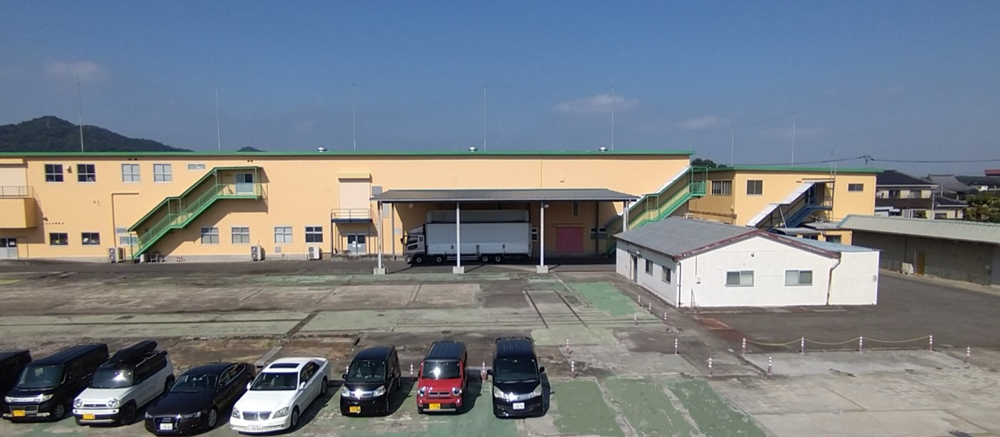
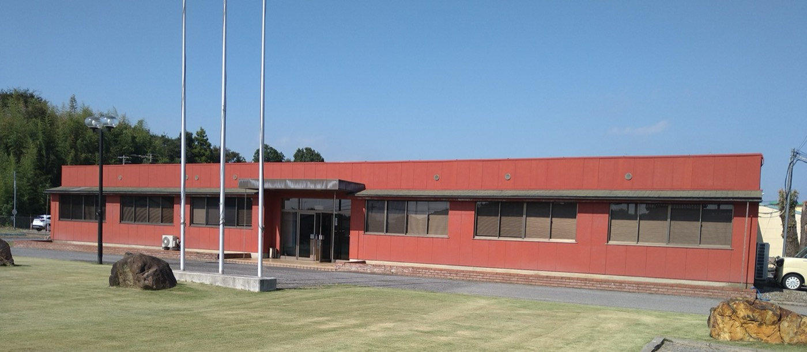
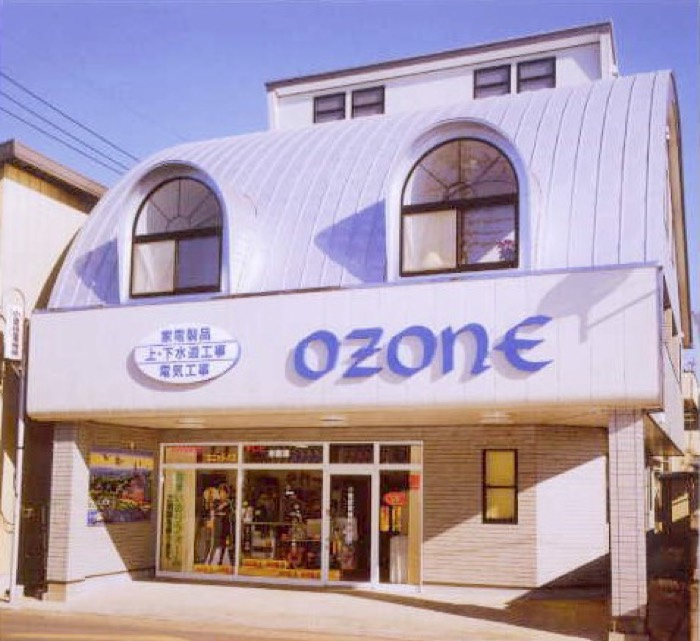

栃木県栃木市藤岡町 ／ 1948年創業
ギヤードモーター、
累計250万台。
小曽根電機株式会社は、栃木県栃木市藤岡町の電機部品メーカーです。 1948年に誘導電動機と柱上変圧器の捲線からはじまり、 いまはギヤードモーターの製造が主力です。2005年の客先承認生産から 2022年12月までに累計250万台を生産しました。 クリーンルーム棟を持ち、2024年9月には医療機器製造業登録証を取得しています。
250万台
ギヤードモーター累計生産
2022年12月
100万台
同・累計生産
2015年3月
630㎡
クリーンルーム棟
第1棟
77年
創業から
1948年〜
つくるもの
創業から扱う製品は変わってきましたが、電気を動きに変える部品という軸は同じです。
-
主力
ギヤードモーター
2005年4月に客先承認生産を開始。2015年3月に累計100万台、 2022年12月に累計250万台を達成しています。
-
対応
クリーンルーム生産
第1棟がクリーンルーム棟（630㎡）。清浄度が必要な製品の 組立・生産に対応します。
-
2024年〜
医療機器製造
2024年9月に医療機器製造業登録証を取得。 クリーンルームとあわせて医療分野に対応できる体制です。
-
これまで
電気部品・トランス
1967年から電気部品の製造、1968年から通信機器用トランスの製造。 トランス製造は2003年に終了しています。
クリーンルーム
第1棟（クリーンルーム棟）は面積630㎡。 2024年の医療機器製造業登録とあわせて、清浄度が求められる仕事に対応します。




拠点
沿革
誘導電動機の捲線から、家電修理、電気工事、トランス、そしてギヤードモーターへ。
- 1948昭和23 栃木県下都賀郡藤岡町大字藤岡1011番地に小曽根電機工業所を設立。誘導電動機、柱上変圧器捲線組立販売を開始
- 1953昭和28 小曽根電機商会、家庭用電気製品の販売修理を開始
- 1957昭和32 電気工事部を開設
- 1967昭和42 法人を設定し、社名を有限会社小曽根電機と改組／藤岡2番地に工場を新設、電気部品の製造を開始
- 1968昭和43 通信機器用トランス製造開始
- 1983昭和58 有限会社小曽根電機を小曽根電機株式会社と改め、組織の拡大と企業の発展を図る
- 1994平成6 第三工場新設
- 1995平成7 電気用品取締法第3条の登録認定
- 1999平成11 千葉佐倉事業部を新設（平成16年12月 栃木工場へ吸収）
- 2000平成12 本社社屋新設
- 2003平成15 栃木工場 東工場新設。トランス製造終了
- 2004平成16 光機事業部工場新設（第二工場）
- 2005平成17 ギヤードモーター 客先承認生産開始
- 2015平成27 ギヤードモーター 100万台生産達成
- 2016平成28 光機課（旧光機事業部）移転（現藤岡工場）
- 2018平成30 総務課 現藤岡工場へ移転
- 2022令和4 ギヤードモーター 250万台生産達成
- 2024令和6 医療機器製造業登録証取得
会社概要
- 商号
- 小曽根電機株式会社
- 創立
- 昭和23年4月 小曽根電機工業所
- 会社創立
-
昭和42年4月 有限会社 小曽根電機
昭和58年2月 小曽根電機株式会社 - 資本金
- 1,000万円
- 本社所在地
- 〒323-1104 栃木県栃木市藤岡町藤岡1011番地
TEL 0282-62-2626（代）／FAX 0282-62-2627 - 工場所在地
-
栃木工場 栃木県栃木市藤岡町藤岡2番地
藤岡工場 栃木県栃木市藤岡町甲248番地 - 役員
-
代表取締役社長 小曽根 愼一
取締役 手島 正夫
取締役 小曽根 笑美子
監査役 青木 清子 - 従業員数
-
43名（令和5年3月31日現在）
社員27名／パート14名／嘱託2名
ほかに派遣・構内外注 25名 - 売上高
- 8.1億円
※ 既存サイトの会社概要は「本社 敷地面積 594」で記述が途切れており、 敷地・建物の面積を確認できませんでした。判明し次第の追記が必要です。
よくあるご質問
クリーンルームでの生産に対応していますか？
対応しています。第1棟がクリーンルーム棟で、面積は630㎡です。 2024年9月には医療機器製造業登録証を取得しており、 清浄度が求められる製品の生産に対応できます。
ギヤードモーターの実績はどのくらいありますか？
2005年に客先承認生産を開始し、2015年3月に累計100万台、 2022年12月に累計250万台の生産を達成しています。 7年で150万台を積み増した計算になります。
医療機器の製造はできますか？
2024年9月に医療機器製造業登録証を取得しました。 クリーンルーム棟とあわせて、医療分野の製造にも対応できる体制です。
どのくらいの規模の会社ですか？
従業員43名（社員27名、パート14名、嘱託2名／令和5年3月31日現在）に加え、 派遣・構内外注が25名です。売上高は8.1億円、資本金は1,000万円です。 本社のほか栃木工場と藤岡工場の3拠点があります。
創業はいつですか？
1948年（昭和23年）4月に小曽根電機工業所として創業し、 誘導電動機と柱上変圧器の捲線組立販売を開始しました。 1967年に有限会社小曽根電機、1983年に小曽根電機株式会社となっています。
ごあいさつ
当社は、常に企業の合理化、技術の向上、人材の育成を図り、 生産改革の推進によって、コスト低減を高め、全社員の運命共同体を基本に、 如何なる経済環境にも前進をもって社会に貢献し、社員のより豊かな生活と健康を願い、 永遠に信頼される会社でありたいと願っています。
代表取締役社長 小曽根 愼一